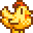

Na vida rural, os animais de fazenda desempenham papéis cruciais, não apenas como fontes de alimentos e produtos, mas também como companheiros leais e parte essencial da rotina diária. Desde as galinhas que nos presenteiam com ovos frescos até as vacas que nos proporcionam leite para queijos deliciosos, cada animal tem sua própria contribuição única para a sustentabilidade e a riqueza da vida agrícola. Vamos explorar o mundo encantador e diversificado dos animais de fazenda, onde a simplicidade se combina com a importância vital.
Animais de galinheiro
Galinhas
Galinhas adultas produzirão ovos todas as manhãs, se alimentadas. Galinhas mais felizes podem produzir ovos maiores e mais valiosos.
| imagem | nome | custo | produz | venda com 5 corações |
|---|---|---|---|---|
 |
galinha-padrao | 800 ouros | ovo | 1 040 ouros |
 |
galinha-padrao | 800 ouros | ovo marrom | 1 040 ouros |
 |
galinha-nula | N/A | ovo nulo | 1 040 ouros |
 |
galinha-azul | 800 ouros | ovo azul | 1 040 |
|  | galinha-de-ouro | N/A | ovo dourado | 1 040 |